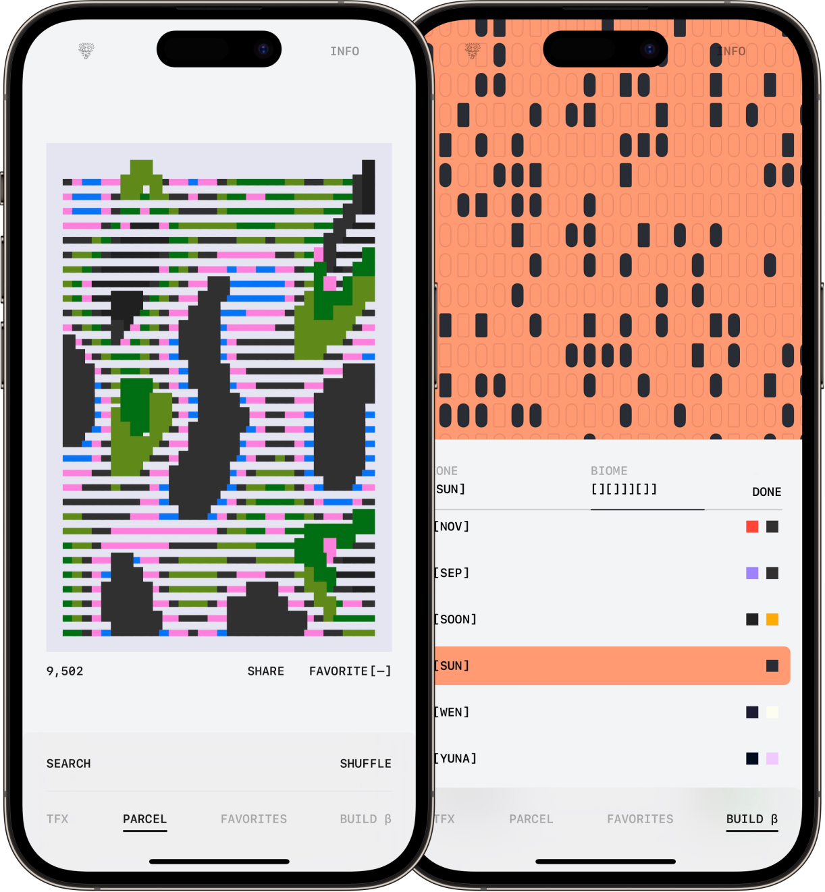
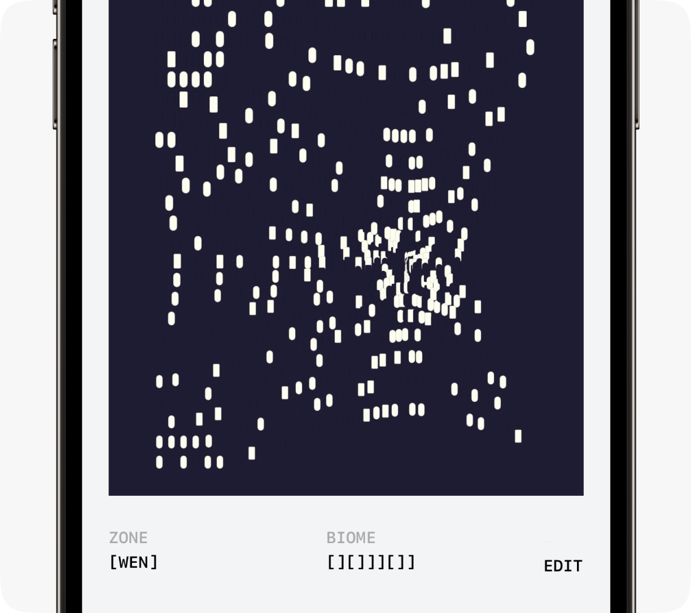

Arjun MahantiA midwesterner in Brooklyn building, designing, and crafting products.
TerraformsOn-chain land
AboutTerraforms is an exteremely complex, beautiful, on-chain art project. This small utility was partially me trying to learn SwiftUI a bit more and partially a way to have a easy way to shuffle through all of the parcels. The majority of the product is a wrapper of the fantastic Terraform Explorer by @el_ranye.


I built an interactive mesh pattern that lets you customize the Biome and Zone of the mesh to essentially create your own terraform.